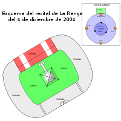

Historia
Comienzos
La banda surgió en el año 1988 en el barrio de Mataderos. Gustavo Chizzo Nápoli, Raúl Locura Dilelio, Jorge Tanque Iglesias y Gabriel "Tete" Iglesias, ya eran lo que después sería conocido como "La Renga" para el final de ese año.
La Renga inició haciendo versiones de canciones de bandas como Creedence, Vox Dei y Manal, entre otras.
El nombre surgió como referencia a la época, donde parecía que siempre faltaba algo para poder encaminarse bien. También está la versión de Locura, quien dice que su pareja de ese entonces tenía una pierna 1,5 cm más corta que la otra, lo que le provocaba una perceptible cojera; es decir era coja, o «renga», y al Tete se le ocurrió ponerle así a la banda.
A partir de un demo de Locura, que llega a manos de Chizzo a través de un amigo, ambos se conocen y deciden formar Colera. Este primer intento llega a su fin cuando a Chizzo le llega el turno de hacer el servicio militar, que era obligatorio en Argentina durante aquellos años. Chizzo terminó el servicio militar y de vuelta con Locura, buscaron a un bajista. Tete fue contactado y junto a él, su hermano Tanque participaba en la batería. Tanque participaba de una banda de Metal al mismo tiempo, la cual abandonó por las presiones que le causaban ambos ensayos junto con el trabajo. Tanque cuenta que optó por lo que sería La Renga por su ambiente más familiar, comparado con el ambiente más heavy de Nepal, su otra banda.
Las primeras presentaciones las hicieron en el Club Larrazábal, Galpón del Sur, además del circuito underground de Buenos Aires.
Primer Albun
Esquivando charcos, el primer disco de La Renga, fue grabado en 1991 y consta de la primera formación oficial de la banda: Chizzo, Locura, Tete y Tanque. A ellos se suma Chiflo, que por aquel entonces oficiaba de vientista del grupo Los Auténticos Decadentes. Al escuchar su forma de soplar, Tete le propuso de inmediato "poner unos caños" (grabar una sección de vientos) en el disco que venían preparando. El álbum fue grabado en dos lugares distintos, siete de los nueve temas fueron grabados en estudio y las dos canciones restantes (La nave del olvido y Blues de bolivia) en su sala de ensayos. En primera instancia el disco contó con 1000 copias hechas por la misma banda, que fueron distribuidas en sus recitales. El álbum fue reeditado en 1998 por la compañía PolyGram.
Segundo disco y recitales en vivo
De manera totalmente independiente, en 1993 se edita A donde me lleva la vida..., sin embargo, la gran demanda del disco obliga a firmar con una discográfica con mayor poder de distribución. La mayor condición de esta nueva relación de la banda fue la independencia artística. El acuerdo se hace con PolyGram.
Los recitales se vuelven cada vez más masivos, con público proveniente en su mayoría de los barrios humildes del Gran Buenos Aires.
Ya en 1994, logran llenar por primera vez el estadio Obras, de esta forma se demuestra el gran crecimiento del poder de convocatoria. Cerraron el año con dos shows: uno en el Microestadio de Ferro el 23 de diciembre y otro a beneficio por la CORREPI el día 30 de diciembre. Abrieron el '95 con un show en el Microestadio de Atlanta. En julio llega la consagración masiva cuando tocan ante más de 4.100 personas en el estadio Obras Sanitarias, donde graban su primer álbum en vivo. Bailando en una pata se realiza con las versiones en vivo grabadas en 1995 en ese recital de Obras Sanitarias. El álbum, contiene el tema que da nombre al mismo, además de una versión de Born to be wild, del grupo estadounidense Steppenwolf. Dos shows en La Rockeria de Banfield, uno en The Block, uno en Cemento el 19 de noviembre de 1995, a beneficio de la joven María Bernarda, dos shows en Obras el 24 y 25 de noviembre, en donde estrenaron "Hablando de la libertad", "Veneno" (cóver de La Negra), "Desnudo para siempre" (que se incluiría en su álbum homónimo) y "Balada del diablo y la muerte", y uno en el estadio de Nueva Chicago el 17 de diciembre de 1995 con Los Auténticos Decadentes.
La Renga
El disco de la estrella, por la gran estrella blanca en la tapa, o simplemente La Renga, aunque en realidad no presenta ningún nombre, se edita en 1998.
La presentación del álbum se hizo con dos shows en el estadio de Atlanta (con Los Piojos como invitados), los cuales convocaron a 50.000 personas,3 además de veintidós recitales por las provincias.
Dos espectáculos en el estadio de Huracán se realizaron al finalizar la gira, haciendo un repaso de toda la historia.
Detonador de sueños

A finales del 2003 editarían Detonador de Sueños. El disco fue grabado íntegramente en su sala de ensayo y producido en lo artístico totalmente por La Renga. El disco fue presentado en el estadio Chateau Carreras de Córdoba el 8 de noviembre de ese mismo año con 57 000 personas presentes.
El 17 de abril de 2004 presentaron el disco en Buenos Aires en el estadio de River Plate ante aproximadamente 55 000 personas.
La vuelta al estadio de Huracán sería al final de ese año. La particularidad es que la convocatoria se realizó a través del boca a boca entre los seguidores. El show, con un nombre que hace referencia a una de las canciones del último álbum, En el ojo del huracán, tuvo un escenario central con cuatro micrófonos y una plataforma giratoria para la batería. La grabación de este show sería presentada a la venta el 23 de noviembre de 2006 en formato DVD.
El 25 de febrero de 2005, fallece Norberto "Pappo" Napolitano, una de las figuras más importantes del rock nacional. Considerando el afecto de la banda por el músico, ese año publica una canción llamada "Viva Pappo". La canción podía bajarse libremente desde el sitio web oficial. Fue presentado en el Patinódromo municipal de la ciudad de Mar del Plata.
El 9 y 10 de julio de 2005 se realizan recitales en el Estadio de Vélez Sarsfield.
La Renga Discos
La Renga desde 2002, cuando finalizó su contrato con la multinacional Universal, se dispuso a manejarse de manera independiente, y comenzó a grabar en su sala de ensayo, en la sala se registraron el EP Documento único en 2002 y el disco Detonador de sueños en 2003. En 2006 la banda realizó una importante inversión al adquirir una quinta en la ciudad de Buenos Aires siendo utilizada como sala de ensayos y estudio de grabación. Allí mismo se realizó la producción de "En el ojo del huracán", video en formato DVD lanzado en 200619 y sus discos "Truenotierra", "Algún rayo" y "Pesados vestigios". La independencia de la banda no solo se refleja en sus discos, si no en sus recitales también, íntegramente realizados por la banda.
LMDS

Se conoce como "Los mismos de siempre" o también "LMDS" a los seguidores del grupo. Este nombre está tomado de la canción homónima, haciendo referencia a aquellas personas que siguen al grupo en los recitales, La Renga en su anteúltimo disco llamado "Algún Rayo" les dedica un tema que se titula "La Furia de la Bestia Rock". Estos grupos llegan a organizarse para realizar eventos con la finalidad de juntar dinero, y contratar buses y seguir a La Renga en donde esté tocando.
El sitio oficial de La Renga contaba con una sección llamada LMDS, donde incluye aportes de sus seguidores. Ahora se los incluye en la cuenta Facebook y un foro.